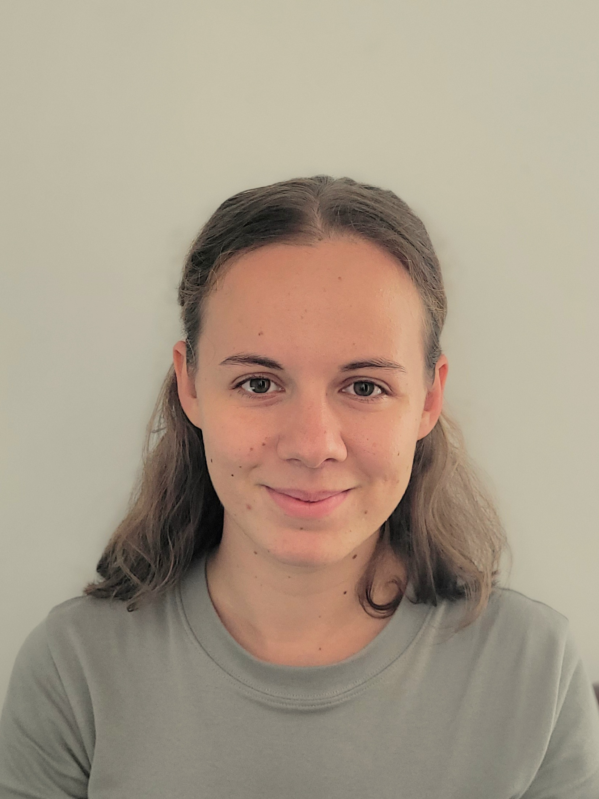
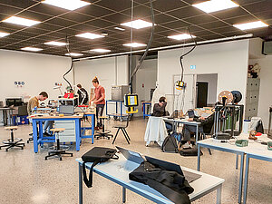
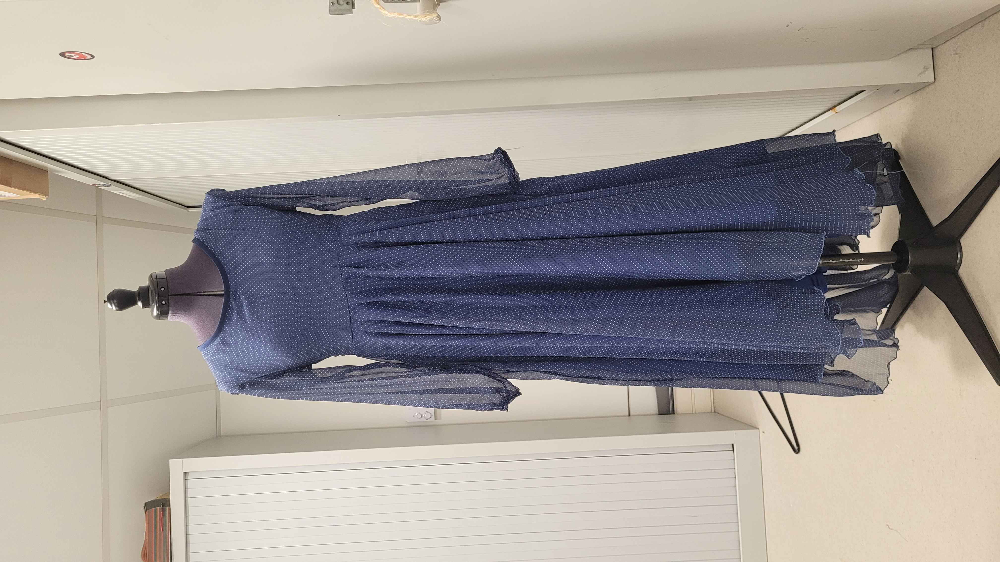
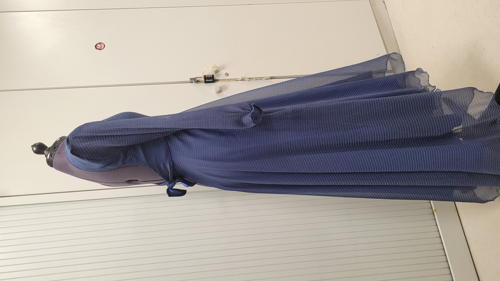
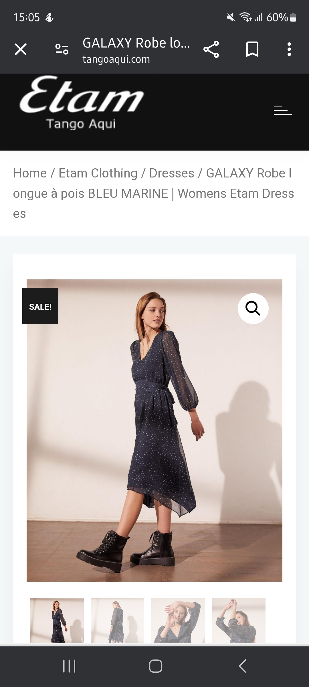

Browser Programming Repository
A responsive portfolio website developed using HTML, CSS, and JavaScript. Features include dark mode, dynamic content, and fundamental backend integration concepts.
Second Year Engineering Student @ ESTIA | Numerical Conception and Innovation
Bidart, France
I am an engineering student at ESTIA Institute of Technology, passionate about the intersection of technology and creative problem-solving. My studies focus on IT systems, software development, and building innovative digital solutions.

A selection of academic and personal projects demonstrating my technical skills:
A responsive portfolio website developed using HTML, CSS, and JavaScript. Features include dark mode, dynamic content, and fundamental backend integration concepts.
A habit tracking web application developed in 2026, consolidating key concepts learned in web development, including state management, UI design, and user interaction.
A lightweight note-taking web app focused on simplicity and usability, implementing CRUD operations and clean UI principles.
A dynamic web application using external APIs to display real-time weather data. Focus on asynchronous JavaScript and API integration.
Demonstration of real-time data fetching using asynchronous JavaScript and public APIs.
Awaiting input...

Practical work carried out in ESTIA’s technological hall, involving hardware-software integration and applied engineering systems.
Beyond software, I apply engineering principles to garment design, focusing on precision, structure, and material behavior.



Researching and applying advanced stitching techniques.